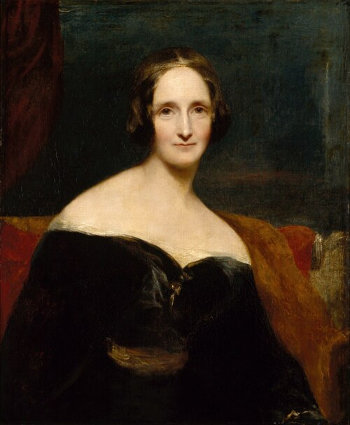

Mary Shelley
Luomisen vapauteen kuuluu vastuu luodusta.
Shelley yhdistää kauhun kysymykseen siitä, mitä toinen olento tarvitsee tullakseen kohdatuksi. Hirviömäisyys ei hänen maailmassaan ratkea pelkän ulkomuodon perusteella.
Etsi teokset kirjastostaElämä ja teokset
Mary Shelley syntyi Lontoossa kirjailijoiden Mary Wollstonecraftin ja William Godwinin tyttäreksi. Hän kasvoi kirjojen ja yhteiskunnallisten ajatusten keskellä. Matkat Euroopassa ja elämä Percy Bysshe Shelleyn kanssa kuuluivat hänen nuoruuteensa.
Frankensteinin idea syntyi Genevenjärven seudulla vuonna 1816. Romaani ilmestyi nimettömänä vuonna 1818. Shelley kirjoitti myös muita romaaneja, kertomuksia ja elämäkerrallisia tekstejä sekä toimitti puolisonsa kirjallista jäämistöä.
Tyyli ja teemat
Sisäkkäiset kertomukset antavat äänen sekä luojalle että hänen hylkäämälleen olennolle. Ylevä luonto ja ahdas yksinäisyys vuorottelevat. Lukija joutuu arvioimaan vastuuta uudelleen, kun samasta tapahtumasta kuullaan toinen versio.
Vastuu · Ulkopuolisuus · Tieto
Aloita tästä
Frankenstein eli uusi Prometheus
Victor Frankenstein luo elävän olennon ja pakenee tekoaan. Kauhun ja myötätunnon romaani kysyy, mitä luoja on velkaa luomukselleen.
Vertaa Victorin ja olennon tapoja kertoa omista teoistaan. Missä kohdissa heidän selityksensä törmäävät?